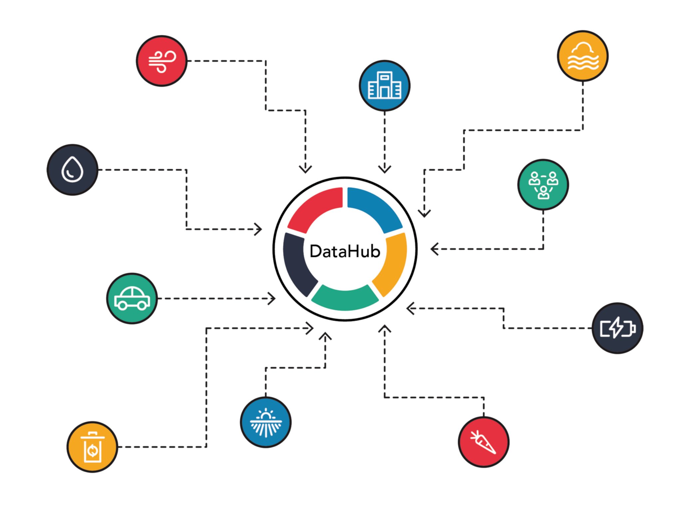

The Data Hub team is responsible for managing the vast amounts of data that JustMac deals with on a daily basis. They ensure the organization's databases are secure, reliable, and efficiently organized. This team also works closely with the development team to create robust software solutions that facilitate data analysis, reporting, and decision making.
1. Data Collection:Gathering and consolidating data from various sources, both internal and external to the organization. This can involve data from different departments, business systems, external APIs, vendors, and other data providers.
2. Data Integration: Combining and harmonizing data from different sources and formats, ensuring that they are compatible and can be effectively analyzed and processed.
3. Data Storage: Storing and organizing data in a central location that is easily accessible to users, typically a data warehouse or a data lake.
4. Data Governance: Defining and enforcing data standards, policies, and regulations to ensure data quality, consistency, privacy, and security. This includes establishing data access controls, data retention policies, and data lifecycle management.
5. Data Transformation and cleansing: Cleansing and transforming raw data into a standardized and consistent format, removing any anomalies, errors, or duplicates, and ensuring data quality.
6. Data Analysis and reporting: Conducting data analysis and generating reports, dashboards, and visualizations to provide actionable insights to decision-makers and end-users. This can involve creating data models and applying various analytical techniques
7. Data Dissemination: Distributing data to relevant stakeholders and users within the organization, ensuring that the right data is shared with the right people at the right time.
8. Data Security and Compliance: Ensuring the security and protection of data, including implementing appropriate security measures to prevent unauthorized access, data breaches, and ensuring compliance with relevant data privacy regulations.
9. Data Collaboration and Sharing: Facilitating the exchange of data with external partners, vendors, or clients through APIs or other integration methods, ensuring data is shared securely and efficiently.
10. Data Lifecycle Management: Managing the entire lifecycle of data, including data acquisition, storage, usage, archival, and eventually disposal or deletion in accordance with data retention policies.
11. Data Strategy And Planning: Developing and implementing a strategic vision and roadmap for data management within the organization, aligning it with the overall business strategy and goals.
Overall, the primary responsibility of a data hub is to provide a centralized and reliable source of data for analysis, reporting, and decision-making, supporting the organization's goals and objectives.